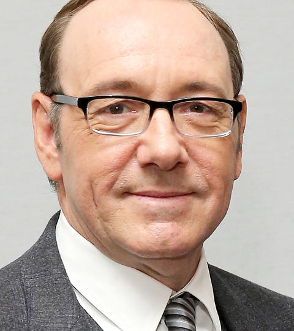

Kevin Spacey Actor
Kevin Spacey Fowler (nacido el 26 de julio de 1959), conocido como Kevin Spacey, es un un actor, director, productor, guionista y cantante americano. Comenzó su carrera como actor durante la década de 1980 con papeles secundarios en cine y televisión. Consiguió los elogios de la crítica a comienzos de la década de 1990 que culminó con su primer Óscar al mejor actor de reparto por el thriller Sospechosos Habituales (1995), y el Óscar al mejor actor por el drama American Beauty (1999).